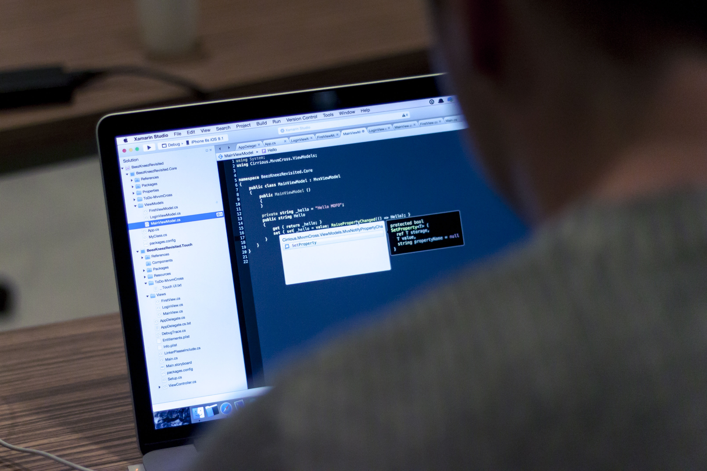

Lecture 2: Intro to Web Development
CS-44105-001 - Web Programming I - Fall 2026

Lecture 2 introduced the field of web development as a whole, drawing on Chapter 1 of the course textbook (Connolly and Hoar). Web development was described as the work of building and maintaining websites and web applications, everything from a single static page to a large, dynamic application.
The lecture distinguished between the major roles in the field: front-end development, which focuses on what users see and interact with in the browser (structure, style, and behavior), and back-end development, which handles servers, databases, and application logic behind the scenes. Full-stack developers work across both areas.
We also previewed the three foundational front-end technologies that will recur throughout the semester: HTML for structuring content, CSS for presentation and layout, and JavaScript for interactivity. This course begins with HTML, which is the focus of our first project.